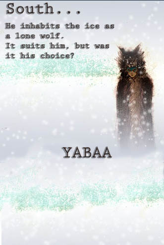
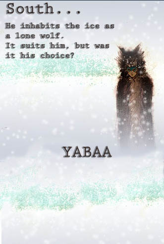
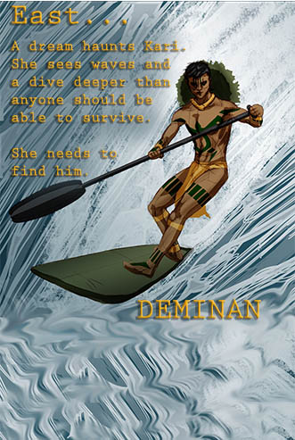
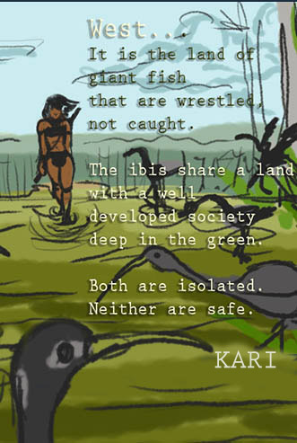

Meet the Spirits
This is a story about responsibility, environmentalism, war, religion, ethics, “coming of age,” and learning to stand up for what is right despite ancient scriptural doctrine. The world of Kab is a place inspired by the pre-Columbian cultures from the North, Central and South American continents. The four spirits have unique powers that are crucial to maintaining a habitable climate to sustain life.
 
  
The Reality of Kab: Mobilize and Educate
Each of Kab's main characters or "Spirits" represent a current issue in the world today. The world of Kab is reflective of South American, Mesoamerica and the Caribbean.
Karau'i and her family's struggles with her government parallel the indigenous people of the Amazon and their struggle with the current Brazilian government ignoring their rights in the Amazonian river basin.